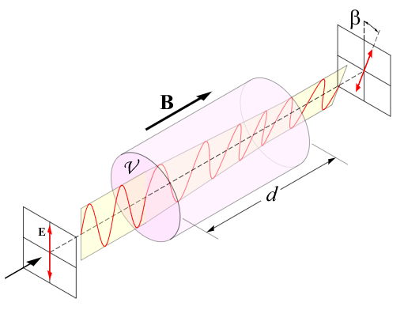
Faraday Effect
Investigated the material-dependent Verdet constant of water by measuring polarization rotation of linearly polarized light in an applied magnetic field.
// 03. physics & research

Investigated the material-dependent Verdet constant of water by measuring polarization rotation of linearly polarized light in an applied magnetic field.
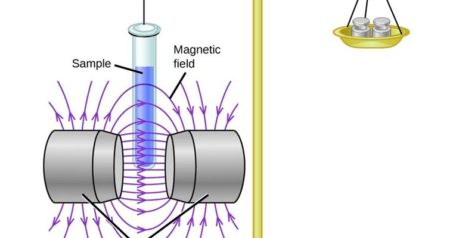
Investigated magnetic susceptibility of paramagnetic (Aluminum) and diamagnetic (Water) materials using a Gouy balance.
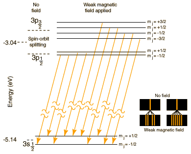
Observed spin-orbit fine structure splitting in sodium using a Michelson interferometer to identify contrast interference patterns.
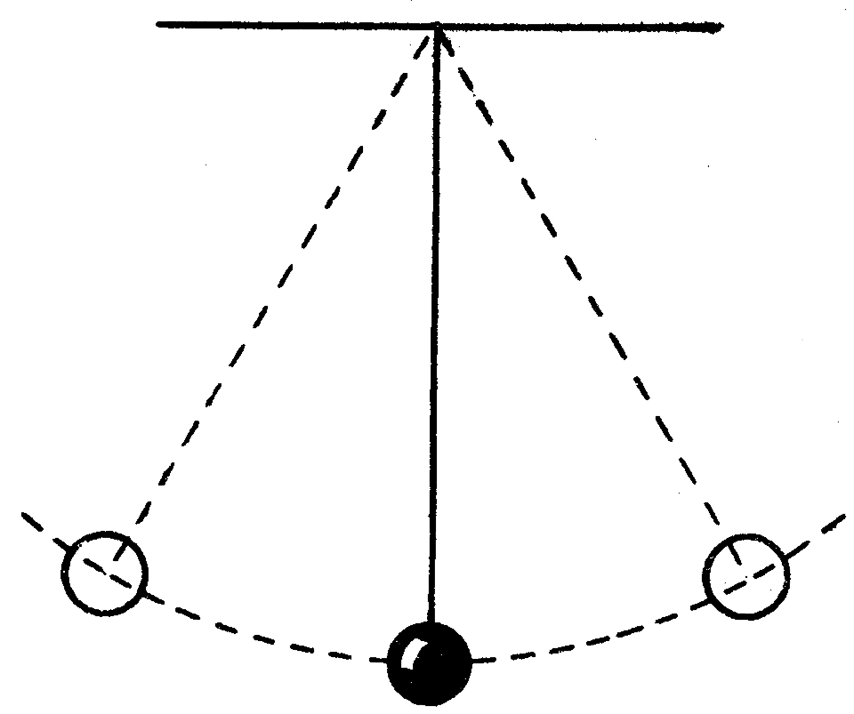
Studied dependence of pendulum period on amplitude beyond small-angle approximation and measured experimental value of g.
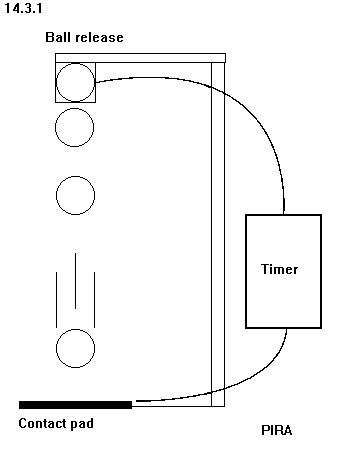
Measured acceleration of a falling mass using video analysis in Logger Pro and compared experimental g to accepted values.
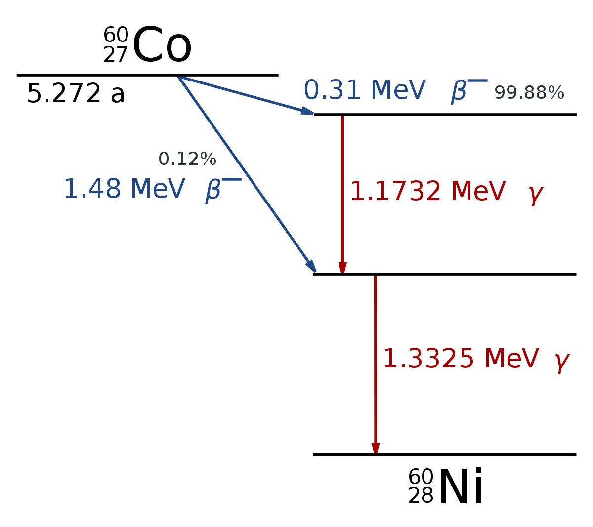
Studied constant-probability radioactive decay of Co-60, comparing Poisson and Gaussian distributions to describe the process.
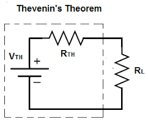
Studied effects of varying load resistance on a voltage divider and verified Thevenin's equivalent circuit theorem.
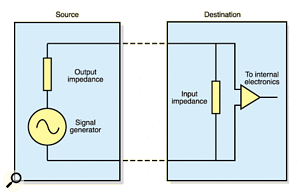
Tested impedance relations for capacitors and inductors and applicability of series-parallel combination methods.
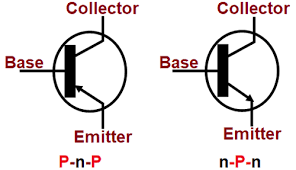
Explored transistor applications as switches and power amplifiers through discrete component experiments.
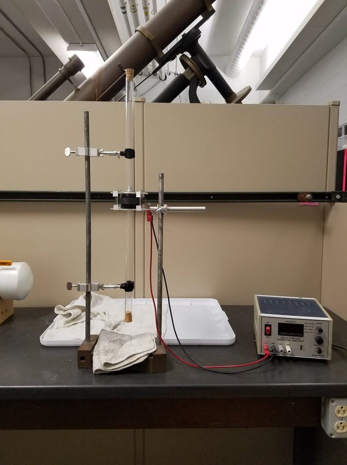
Measured resonance frequencies in air and helium to calculate the ratio of specific heat capacities (γ = Cp/Cv).
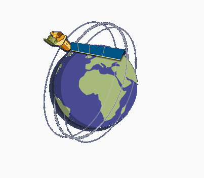
Computational simulation of satellite orbital mechanics and path visualization.
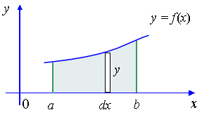
Approximating area under a curve with rectangles using Mathematica for numerical integration.